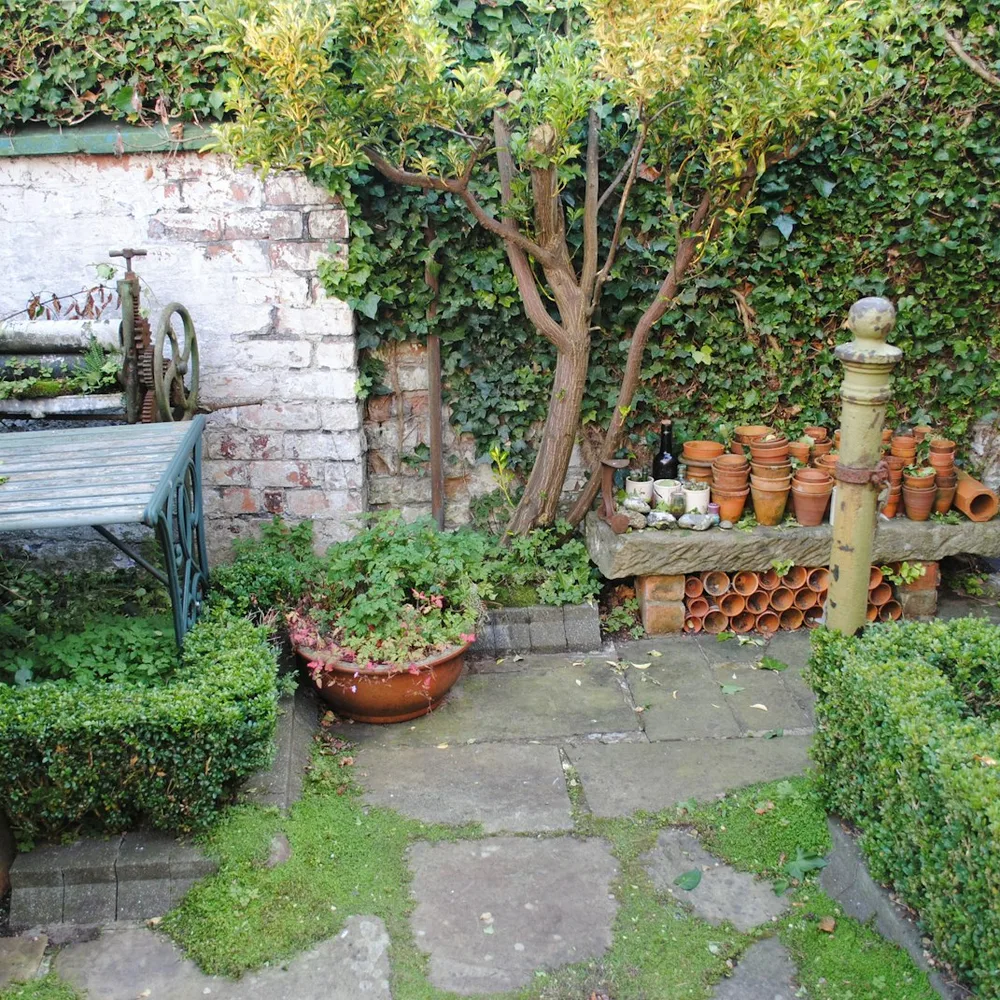
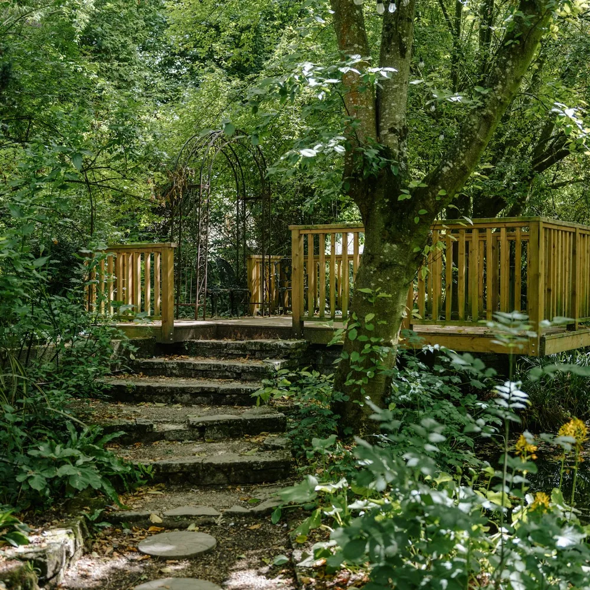

Paysagiste urbain · Bordeaux · depuis 2018
Entre l'échoppe et le mur du voisin.
Nous faisons de chaque petit bout de terre un vrai jardin.
Cours, balcons et jardins d'échoppe : nous les dessinons, les réalisons et les entretenons, avec une seule équipe.
4,9 ★★★★★ · 71 avis GoogleExempleBrise-vue en jasminVis-à-vis masqué côté voisin
EntretienTaille d'hiverProchain passage planifié
4,9 / 5Note Google
71Avis clients
2018Création à Bordeaux
3 métiersConcevoir · réaliser · entretenir
Vis-à-vis côté voisinStructure aluminium couverte de jasmin, 1,8 m.
Ombre de l'arbreMassif de plantes de mi-ombre au pied.
Méthode
Tout commence par un plan.
Avant le moindre coup de pelle, nous dessinons votre jardin : plans, dessins et dossier d'étude. Chaque contrainte du lieu y trouve sa réponse.
- 01Écouter — vos envies et l'usage que vous ferez du jardin.
- 02Dessiner — un plan adapté à la lumière et à l'exposition.
- 03Réaliser — terrasse, murets, clôture, plantations, arrosage intégré.
- 04Entretenir — ponctuellement ou avec un contrat à l'année.
Petits espaces
Un jardin de ville cumule les contraintes.
Peu de place, des murs partout, des voisins proches : c'est justement notre spécialité depuis 2018.
Le vis-à-vis
Fenêtres voisines, murets bas. Brise-vue végétal, palissade bois ou structure couverte de jasmin.
Le manque de place
Quelques mètres carrés seulement. Plusieurs ambiances pour que le jardin paraisse plus grand.
La lumière
Cours à l'ombre des murs. Des plantes choisies pour l'exposition réelle du lieu.
Le terrain abîmé
Après des travaux, pente, niveaux, pas de bordures. Remise en état, engazonnement, bordures.
L'arrosage
Étés chauds, absences. Arrosage automatique intégré aux massifs.
Le temps
Pas le temps d'entretenir. Contrat d'entretien avec plusieurs passages par an.
Réalisations
Chaque mètre carré compte.

Terrasse bois

Contre le vis-à-vis

Entre quatre murs

Bois et béton teinté

Pots et grimpantes

Terrasse et escalier

Haies et arbres
Avis Google
« … le jardin est transformé, il semble avoir doublé de volume. »
4,9★★★★★
71 avis sur Google
Voir les avis sur Google
71 avis sur Google
« Incroyable, nous avons fait appel à Jardin d'échoppe pour un simple entretien post rénovation de notre maison, le jardin est transformé, il semble avoir doublé de volume. Outre que l'équipe est super sympa, ils nous ont aussi mis en déchetterie beaucoup de matériels de jardin abimé. … »
L
Laura J.octobre 2026
« … Valentin s’est occupé des devis et de la mise en place du projet, puis Pierre, Marin et Alexis ont réalisé une superbe structure en aluminium recouverte de jasmin pour dissimuler un vis-à-vis. Le rendu est élégant, pratique et soigné. Une équipe professionnelle, créative et à l’écoute : merci à eux ! »
M
Mathieu L.septembre 2025
« Très heureuse d'avoir fait aménager mon jardin par Jardin d'Echoppes. Le résultat dépasse mes attentes, et apporte une réelle valeur ajoutée à la maison. Que ce soit au moment de la conception ou de la mise en oeuvre, les équipes ont été très professionnelles, réactives, et on réalisé les travaux dans un délai très raisonnable. … »
C
Caroline Z.mars 2026
« De la conception à la réalisation, Jardin d'échoppe nous a livré un jardin avec plusieurs ambiances dans lequel toute la famille se sent très bien et pour lequel nous avons beaucoup de compliments. Le résultat est plus qu'à la hauteur de nos attentes. … »
C
Claire D.avril 2023
« Nous avons fait appel à Jardin d'Echoppe pour des travaux d'entretien des arbres et d'aménagement du jardin, avec notamment l'extension d'une terrasse bois. Nous sommes très contents du résultat et du professionalisme de l'équipe. Je vous les recommande vivement »
M
Mathieu B.mars 2026
« … Nous avons fait refaire un jardin et 2 petites terrasses : l'équipe a toujours été sympathique et professionnelle, notre besoin bien compris et bien accompagné, le chantier propre et bien géré, le rendu très réussi. … »
G
Guillemette S.juin 2025
« Une très bonne surprise. Non seulement Le concept était alléchant et incroyablement adapté à notre petit jardin de ville, mais en plus, le système de pack est très ingénieux rendant la prestation accessible à beaucoup. Le dossier d'étude est de très grande qualité. Je conseille vivement ! »
B
Benoît F.octobre 2019
« Très belle réalisation d'une palissade en bois avec vegetalisation par une équipe dynamique et sympathique qui n'hésite pas à revenir si qq retouches sont nécessaires. À recommander sans hésiter. »
F
Franck T.juin 2025
« Nous avons donné carte blanche sur notre jardin de 80m2. Le résultat est à la hauteur de nos espérances. De la réflexion à la conception, Jardin d'Echoppes a fait preuve de professionalisme. On se laisse guider tout en tenant compte de nos goûts et attentes en terme d'usage. … »
L
Lucie N.avril 2023
« J'ai fait appel à Jardin D'Echoppe pour entretenir mon petit jardin composé d'une haie de pyrancathas et d'arbustes divers . Je suis très contente de la prestation qui est soignée. … »
J
Janine V.octobre 2025
« comment exprimer notre joie ? notre jardin n'a jamais été aussi beau. les plans proposés ne représentent pas assez bien le résultat obtenu. en plus une équipe hyper compétente et sympa. nous sommes tellement content que nous prenons un contrat annuel pour maintenir ce jardin »
C
Carlos S.novembre 2019
« On va pas se mentir, la note de 5 étoiles ressemblant à une élection en Corée du nord peut surprendre, mais elle est amplement mérité !! … »
F
Frédéricmars 2022
Visite et devis
Votre projet en 3 questions.
Répondez, envoyez : nous vous rappelons pour fixer une visite.
Téléphone05 64 37 59 58
E-mailcontact@jardindechoppe.fr
Adresse19 av. Rudolf Diesel, Mérignac
HorairesLun., mar., jeu., ven.
9 h-12 h · 14 h-18 h
9 h-12 h · 14 h-18 h